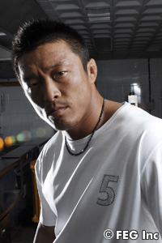
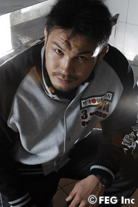
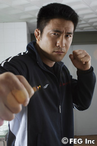
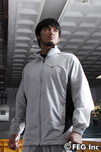
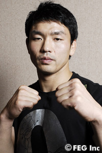
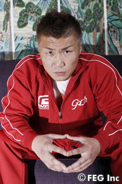
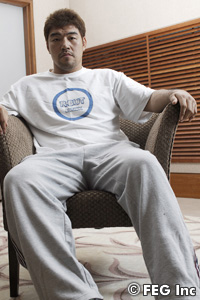

|
 |
【秋山成勲】
──復帰戦が近づきました。今の心境はいかがですか？
秋山 この時間、雰囲気を味わっている感じですね。
──落ち着いている感じですね。
秋山 今は落ち着いていた感じですね。
──韓国では秋山選手とデニス・カーン選手の一戦が盛り上がりを見せています。
秋山 まだ今日来たばっかりなので、まだいまいちよく分からないです。まだ街には出ていないんで、肌には感じていませんね。
──日本から韓国に入る飛行機の中ではどんな気持ちだったですか？
秋山 試合をするわけですから、今まではちょっと違う感じですね。今までの試合のイメージを考えていました。
──順調に調整はできましたか？
秋山 いいか悪いかはまだ判断できないんですけど、よくもなく悪くもなくって感じですね。
──気持ちとしては、試合に臨める気持ちになっていますか？
秋山 そうですね。試合の気持ちにはなっています。
──デニス・カーン対策というのは？
秋山 パーフェクトな選手なので、自分のスキルをすべてをあげるというのと、あとは、何をしたらいいのか分からないという感じですね。
──「何をしたらいいのか分からない」というのは？
秋山 穴がなさ過ぎなんですよね……。
──このように穴のない選手と闘うのは初めてですか？
秋山 自分の中ではあったつもりなんですけど、それよりもレベルが違いますね。
──不安はないですか？
秋山 まあ、不安がないというと嘘になりますけど、試合ですから。すべてにおいて不安ですね。
──復帰戦ということで、どういう姿を見せたいですか？
秋山 自分がどうしたいというよりかは、試合をしている姿を見ていただいて、それをどう判断しようが皆さんの勝手ですからね。
──勝ち負けは抜きにして、見てもらえれば納得してもらえる自信はあると？
秋山 どうなんですかね？ 素直なところなんですよ。
──デニス・カーン選手は「実績でいえば俺とは格段の違いがある」と言っていました。
秋山 キャリアが違うというのは、見てのとおりですからね。それについては何も言うことはないです。そう思われることはそう思われるで仕方ないことですからね。
──「アスリートとしてやってはいけないことをした」とも。
秋山 そう思われるのもしょうがないことです。本当にあったことですから。
──セコンドがなかなか決まらなかったようですが、最終的にどうなりましたか？
秋山 本来のチーム編成とは正直、かけ離れていて、今までとはちょっと違うんですけど、こんなボクでもついてきてくれた人がいました。そういった意味では嬉しかったですね。
──周りの信頼を取り戻すためにも今回の一戦は大事ですね。
秋山 誰でも自分の中でいろんなドラマがあると思うんですけど、自分なりにその部分は焼き付けて、試合ができるということを感謝したいと思います。
──以前、「勝率は35％」とおっしゃっていましたけど、あれから現在までで何％になりましたか？
秋山 40％ですね。
──では、自信を持って「勝てる」とは……？
秋山 言い切れないですね。 |
|
|
|
|
|

|
|
【ミノワマン】
──試合直前となりました。今の心境はいかがですか？
ミノワマン き、き…緊張しないようにしています。
──と言っている感じが、緊張していますね。
ミノワマン アウェイな感じですね。日本だと仲間とか友達とか近くにいますけど、こっちに来たら一緒に来たメンバーだけですからね。試合に向けて、メンバーと信頼し合って頑張っていきたいです。
──敵は多いほうが燃えますか？
ミノワマン 燃えると言えば燃えます。
──韓国で試合をされるのは初めてですか？
ミノワマン 2回目です。
──今回、韓国入りして、空気とか感じたことありましたか？
ミノワマン 独特な匂いがあるんで、なんかアジアの匂いだなと。あまりに追い続けたくはないけど、そういう匂いを嗅ぐと街に繰り出してみたくなりますね。
──今回、相手がキム・ミンス選手ということでデカイ選手ですが。
ミノワマン 体が大きくてしかも動く選手。スピードもありますし、やりづらそうだなと。韓国に練習しに行った時に何度か手合わせしたんですけど、そう感じましたね。
──今回の試合の前に野球の特訓をしていましたが？
ミノワマン 今回の試合に限らず今後の技術の向上のためにやっているので、できれば特訓の成果を今度の試合で出したいですね。なるべく早く成果を出したいです。
──正直、まだ出そうにない？
ミノワマン まだまだですね。
──あの特訓の成果が出るとミノワマン選手はどうなってしまうんですか？
ミノワマン それはちょっと言えないですね。あれは秘密特訓なんで、その特訓の成果が出て、その特訓は間違っていないと分かった時に、すべてを明かしたいと思います。
──キム・ミンス選手はガツガツ前に出てくる選手ですよね。
ミノワマン 体大きいんでドドドッとこられると、怖さというかやりづらさがありますけど、それに体や気持ちが崩れないようにしたいと思います。
──改めて、この試合のテーマを教えてもらえますか？
ミノワマン 『ミノワマン第5話“時流の巻”』です。自然と触れ合うことで、自然の力は物凄い力だということに気付き、自然体が強い力を発する。時の流れに自然にいるようにと思い、“時流”にしました。
──韓国で試合をするってことに関しては、何か意味がありますか？
ミノワマン それは、アウェイってことですね。9:1の割合で、相手に声援が飛ぶと思います。ヒールで行きたいんだけど、最終的には逆転させたいです。ヒーローになりたいです。
|
|
|
|
|
|

|
|
【大山峻護】
──体調はいかがですか？
大山 凄くいいですね。ワクワクしてます。
──緊張はないですか？
大山 まだないですね。明日になればわからないですけど（笑）。
──調整はスムーズにいけましたか？
大山 そうですね。不思議なくらい。
──どんな闘いをしたいですか？
大山 とにかく試合に出るからには最高のコンディションでしっかり準備をしてきましたんで、熱い試合がしたいです。
──昨年はトーナメントでベスト４までいきましたが、最後はマヌーフの打撃の前に散りました。
大山 そうですね。一戦一戦をこれが最後というつもりで闘って、また来年のトーナメントに出たいです。そのあとはまたマヌーフ戦にまで辿り着きたいです。とにかく一戦一戦ですね。
──進化した大山選手が見られますか？
大山 進化して試合に出ないと意味ないですからね。
──ファンには自分のどこを一番見てほしいですか？
大山 やっぱり魂で試合をしたいなと思いますね。とにかく魂が伝われば。
──今回相手となるニュートン選手に対してはどんな印象を持ってますか？
大山 危険な選手とは死ぬほどやってきましたから大丈夫ですよ。もう真っ向勝負しかないですから。全部出してがんばりますよ。
──ぜひ一年分の気迫を試合を見せてください。
大山 この試合をステップにして、またHERO'Sのリングで頑張りたいと思います。 |
|
|
|
|
|

|
|
【柴田勝頼】
──コンディションはいかがですか？
柴田 コンディションまずまずです。
──疲れはないですか？
柴田 大丈夫です。当日にベストコンディションに持っていきたいと思います。
──韓国は初めてですか？
柴田 2回目です。1回目はプライベートで観光に来ました（笑）。
──韓国大会への期待感はありますか？
柴田 韓国の総合格闘技熱が凄いと聞いていて、そういうところでやるのは楽しみですね。リングでやることは同じですけど。
──韓国のファンの前で何かパフォーマンスは考えていますか？
柴田 パフォーマンスはやろうと思うとできないんで、自然に任せてですね。パフォーマンスではなく、試合でインパクトを残したいです。
──インパクトを残すというのは具体的に？
柴田 自分が出せる試合。自分にしかできない試合ですね。大会で一番のインパクトを残したいです。
──先日行われた『Dynamite!!』の会見で谷川代表が、「韓国大会でMVP的な活躍をした人には、『Dynamite!!』への道を用意しましょう」という発言があったんですけど。
柴田 聞いてないすけど、それはご褒美的な感じで気合い入りますね。なくても頑張りますけど、さらに気合いはいりました。
──対戦相手のホ・ミンソク選手の試合は見ましたか？
柴田 ミノワマンとの試合見ました。すごいガツガツした試合をしていたので「面白ぇなぁ」って。
──警戒する部分は？
柴田 今回は、作戦とかも立てずに、やりたいと思ったことをやろうと。
──ホ・ミンソク選手は「打撃では絶対に負けない。1回パンチを出したら止まらねえんだよ」と言っていました。
柴田 止めます。殴り合いは臨むところです。「オレのパンチは止められねえ」っていうなら、止めてみせますよ。
──今回はどんな練習を？
柴田 反省点を重点的に、あとは総合的に練習しました。
──桜庭戦ではどんなことを得ましたか？
柴田 得たことが大きすぎて一言では言えません。
──桜庭選手の「これは凄かったなぁ」と思う部分は？
柴田 自分のペースで試合をしていたことですね。次は自分のペースで試合ができるように頑張ろうと思いました。
──船木選手から何かアドバイスは？
柴田 これといってないのですが、今までの積み重ねを出していこうと。 |
|
|
|
|
|

|
|
【キム・デウォン】
──コンディションはいかがですか？
キム いいですよ。
──減量はつらいですか？
キム そうですね。でも、スポーツ選手には減量はつきものですから。
──HERO'S初参戦。今の心境は？
キム こんな大きな舞台に上がれるのは光栄だね。
──対戦相手のマルセロ・ガルシア選手の印象は？
キム グラウンドがとても上手だね。外見だけだと、顔が可愛いよね。
──今まで見てきた選手の中で、ガルシア選手のグラウンドテクニックはどうですか？
キム グラウンドテクニックだけを取ったら、世界一ですね。
──ガルシアのグラウンド技術は怖い？
キム 怖くはない。逆に気が楽なくらいだよ。
──試合が決まった時は？
キム 必ず勝ってやるって気持ちになったよ。
──どんな試合になる？
キム グラウンドが強いので打撃の試合運びになると思う。
──打撃の練習に重点を置いている？
キム うん。ボクシングの練習を重点的にやっているよ。左フックが強くなった気がするよ。
──今はどんな練習を？
キム ユン・ドンシク先輩とか柔道時代の先輩とスパーリングをしているよ。
──今後闘ってみたい選手はいますか？
キム なんかメルヴィンがユン先輩と再戦したいと言っているみたいなんだけど、メルヴィンにはオレとも闘ってほしいね。 |
|
|
|
|
|

|
|
【金泰泳】
──コンディションはいかがですか？
金 「こんな感じかなぁ？」と（笑）。細かく考えるとしんどくなるんで、そういうことはあまり考えないようにしているんです。それでも、行ける時は行けるんで。
──韓国には知り合いは？
金 一切来ないです。まったく。基本的に、ボクの応援してくださっている人は、すごく心配しているんですね。
──韓国で試合をするのは初めてなんですよね？
金 初めてです。
──試合のために韓国入りした時の気持ちは？
金 空港に着いた時に、かなり「韓国に試合しに来た」という感覚になりましたね。10歩くらい歩いたら忘れましたけど（笑）。でも、着いた瞬間は「試合をしに来たんだなぁ」と思いました。
──日本と韓国のファンの違いについてはどう思われていますか？
金 韓国のファンは、もちろん技術もそうなんですけど、打たれていても向かっていく姿勢を特に応援してくれますよね。負けていても向かっていくという姿勢というか。そういうのが好きなんじゃないかなと、ボクは思います。
──そんな韓国ファンの前でどんな試合をしたいですか？
金 相手はストライカーなんで、僕自身もまったく寝技には付き合いたくないし、ならば「打撃決着でどうですか？」という試合ですね。ちっちゃいオープンフィンガーグローブで打撃勝負。そうなったらなったでドキドキしますけどね（笑）。
──薄いグローブで打撃勝負ですか。
金 痛そうですよね。でも、意地もあるから、バチバチ殴り合うのがいいんじゃないでしょうか。というか、「打撃で行くから、打撃で来い！」と。それがストライカー対決の醍醐味でしょうしね。
──気を付けているところはどこですか？
金 距離感と、意外と打撃にクセがあるとこですね。ヒザ蹴りとか、あとはハイキックですね。ボクもハイキッカーですからいい勝負になるんじゃないでしょうか。
──タイプ的には、金選手にとってはやりづらい相手ですか？
金 ちょっと慎重に行かないとダメですね。リーチもありますし、見た目よりパンチ力もあると思います。
──今回の試合のテーマはありますか？
金 やっぱり“立ち勝負決着”ですね。
──意気込みをお願いします。
金 大きな事は言えませんけど、ストライカー同士の良さが出る試合をしたいと思います。 |
|
|
|
|
|

|
|
【キム・ミンス】
──試合まで間もなくですが、現在の心境はいかがですか？
ミンス いつもの通りで緊張もしてるのですが、いい試合をしたいという気持ちでいっぱいです。
──母国での試合ということでモチベーションも高いのではないですか？
ミンス ええ、たしかにホームグラウンドで応援してくれるファンも多いと思うので、それに応えられるようにがんばりたいと思います。
──反響の大きさみたいなものは感じてますか？
ミンス 少なからず感じています。
──体格差のある闘いをどう感じてますか？
ミンス 一回りも小さな選手と闘うのは初めてで、正直少なからず自分の中で負担にはなっています。
──ミノワマンの印象は？
ミンス 強い根性。
──ミノワマンに対して気をつける点は？
ミンス 足関節です。
──ミノワマン対策は？
ミンス いえ、いつもどおりの練習をしてきました。
──ミノワマンは“超人”になるために闘っています。
ミンス それでは今回は人間が超人に勝てることをお見せします（笑）。
──この一戦を楽しみにしているファンが多いです。
ミンス 自分もかつては簡単に負けた試合もありますが、今回はもっと強い自分をお見せするつもりでいます。ミノワマンはこれまでにでかいだけの選手と闘ってきましたが、自分は大きいうえに力もあります。
──最終的にはHERO'Sのリングでなにを目指していますか？
ミンス チャンピオンです。
──今大会に関する意気込みをお願いします。
ミンス 韓国で開催されるHERO'Sということでとにかくいい試合を見せたいと思います。
──ミノワマンにも一言お願いします。
ミンス カッコいい試合をしようぜ、ミノワマン！ |
|
|
|
|
|